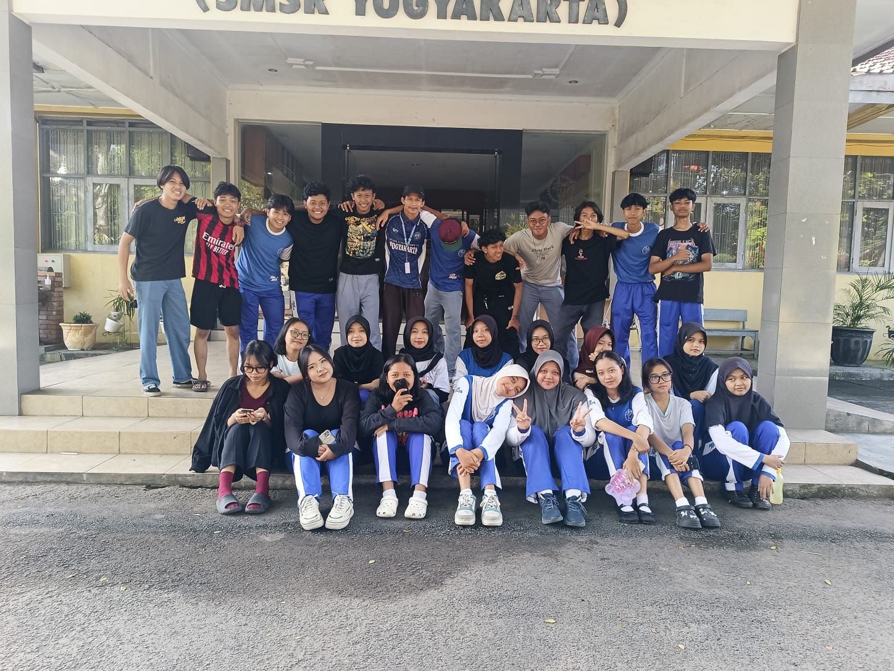
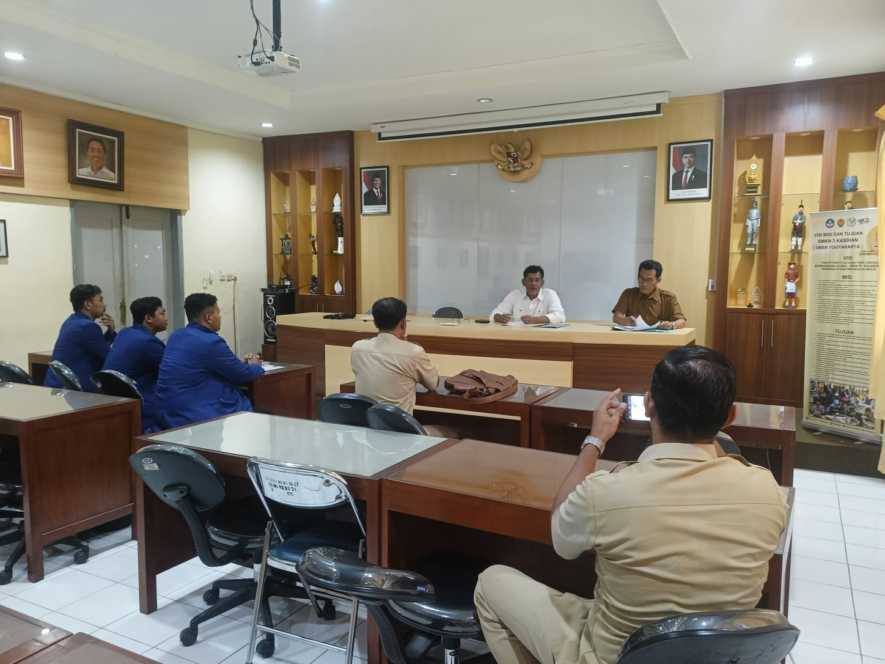

PORTO

About

Let's Connect :
HELLO.
Saya Padlan Holik, S.Pd., mahasiswa Pendidikan Profesi Guru (PPG) Calon Guru di Universitas Negeri Yogyakarta bidang studi Pendidikan Jasmani, Olahraga, dan Kesehatan (PJOK). Saya berfokus pada perancangan pembelajaran gerak yang inklusif, aman, menyenangkan, serta penerapan pedagogi transformatif berbasis Teaching Games for Understanding (TGfU) yang berpusat pada peserta didik.
Bagi saya, pendidikan jasmani bukan sekadar mencetak atlet atau menguras keringat di lapangan, melainkan menuntun kodrat anak agar bertumbuh secara utuh — olah pikir, olah hati, olah rasa, dan olah raga demi mencapai kebahagiaan setinggi-tingginya.
Education
2026
Pendidikan Profesi Guru (PPG) Calon Guru
Bidang Studi Pendidikan Jasmani, Olahraga, dan Kesehatan (PJOK) • Universitas Negeri Yogyakarta
2024
Sarjana Pendidikan Jasmani, Kesehatan, dan Rekreasi (S.Pd.)
Fakultas Ilmu Keolahragaan dan Kesehatan • Universitas Negeri Yogyakarta
Software & Teaching Skill
Teaching Experience
PPL Terbimbing (PPL I)
Orientasi, observasi karakteristik peserta didik, asistensi mengajar, dan refleksi terbimbing.
PPL Mandiri (PPL II)
Praktik pembelajaran mandiri siklus penuh, asesmen diagnostik berdiferensiasi, dan studi kasus PTK.
Projek Kepemimpinan
Inisiasi program literasi digital dan keamanan siber bagi generasi muda di lingkungan masyarakat.
Pengembangan Media Interaktif
Rancang bangun modul digital dan gamifikasi edukasi computational thinking untuk siswa.
Table Of Content
” TABLE OF CONTENT ”
Materi Perkuliahan & Artefak
01. Filosofi Pendidikan dan Pendidikan Nilai
Mendalami hakikat pendidikan, pemikiran Ki Hajar Dewantara, sistem among, etika moral, dan internalisasi nilai-nilai luhur Pancasila dalam ekosistem pendidikan.
02. Pembelajaran Mendalam dan Asesmen Dasar
Perancangan pembelajaran berbasis Understanding by Design (UbD), asesmen diagnostik, formatif, dan sumatif untuk menumbuhkan pengalaman deep learning.
03. Pemahaman Tentang Peserta Didik
Memahami tahap perkembangan kognitif dan sosio-emosional anak, profil kesiapan belajar, minat, serta pemetaan gaya belajar peserta didik.
04. Pembelajaran Kreatif Inovatif
Eksplorasi model pembelajaran aktif, integrasi computational thinking, media digital interaktif, dan pendekatan kreatif dalam pengajaran informatika.
05. Pola Berpikir Bertumbuh
Mengembangkan growth mindset bagi pendidik dan siswa, membangun resiliensi, motivasi intrinsik, budaya reflektif, serta keberanian belajar dari kesalahan.
06. PPL Terbimbing
Observasi iklim sekolah mitra, asistensi mengajar, dan praktik pembelajaran terbimbing di kelas informatika bersama Guru Pamong dan DPL.
07. Pembelajaran Sosial Emosional
Mengintegrasikan 5 kompetensi CASEL (kesadaran diri, manajemen diri, kesadaran sosial, keterampilan berelasi, keputusan bertanggung jawab) & mindfulness.
08. Pembelajaran Mendalam dan Asesmen Lanjut
Penerapan pendekatan Teaching at the Right Level (TaRL) dan Culturally Responsive Teaching (CRT) serta asesmen autentik berkelanjutan.
09. Projek Kepemimpinan
Inisiasi dan pelaksanaan Workshop Pencegahan & Penanganan Cedera Olahraga (P3K PJOK) berkolaborasi dengan PMI dan KKG PJOK Jogja Selatan.
10. Pengembangan Keprofesian Berkelanjutan
Peningkatan kompetensi pedagogik dan profesional secara berkelanjutan melalui refleksi kritis, publikasi ilmiah, dan keterlibatan aktif dalam komunitas belajar.
11. PPL Mandiri
Pelaksanaan pembelajaran mandiri komprehensif di sekolah mitra, implementasi siklus Penelitian Tindakan Kelas (PTK), dan diseminasi praktik baik.
Dokumentasi Kegiatan PPL
 LIHAT FULL
LIHAT FULL
HUT KEMERDEKAAN RI 81

LIHAT FULLPraktik Pembelajaran

LIHAT FULLObservasi Iklim & Fasilitas Belajar